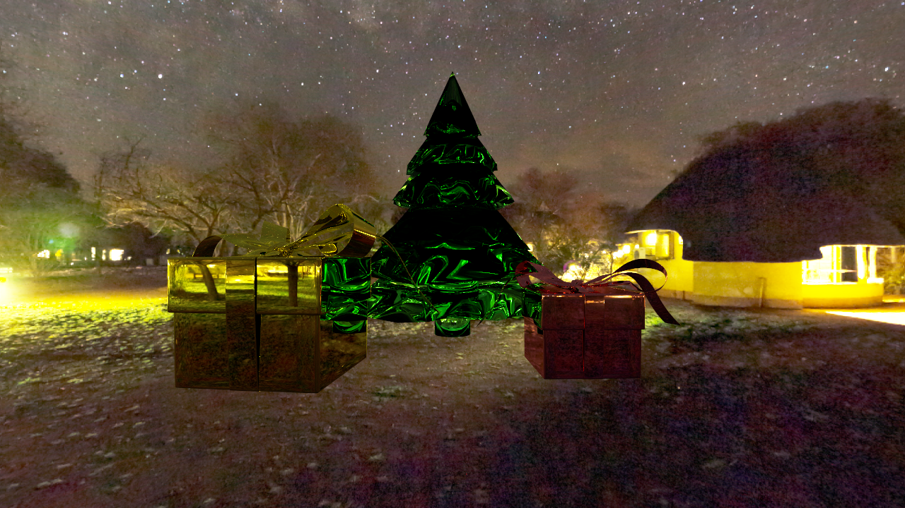

**Assignment 3 Report**
AndrewID: qiruh
(##) About this template
* You can view your writeup by opening it in a browser - right click this file and open with your browser of choice.
* Replace reference images with your own screenshots or renders when applicable.
* Include descriptions of any encountered problems and the time you spent on each task.
(##) A3T1 CHECKPOINT
You do not need any screenshots for this task.
Your completion will be graded based on the reference `test.a3.task1.cpp` file and
checking that camera rays properly fill up the camera view frustrum.
(##) A3T2 CHECKPOINT
You do not need any screenshots for this task.
Your completion will be graded based on the reference `test.a3.task2.*.cpp` files and
checking that rendering spheres and triangles works properly.
(##) A3T3 CHECKPOINT
You do not need any screenshots for this task.
Your completion will be graded based on the reference `test.a3.task3.*.cpp` files and
checking that the generated BVH looks reasonable and rendering large meshes is fast and correct.
(##) A3T4 FINAL
You do not need any screenshots for this task.
Your completion will be graded based on the reference `test.a3.task4.*.cpp` files and
checking that rendering lambertian materials look correct.
(##) A3T5 FINAL
You do not need any screenshots for this task.
Your completion will be graded based on the reference `test.a3.task5.*.cpp` files and
checking that rendering mirror, refract and glass materials look correct.
(##) A3T6 FINAL
You do not need any screenshots for this task.
Your completion will be graded based on the reference `test.a3.task6.*.cpp` files and
checking that there is an improvement between using task 4 direct lighting and using task 6 direct lighting.
(##) A3T7 FINAL
You do not need any screenshots for this task.
Your completion will be graded based on the reference `test.a1.task7.*.cpp` file and
checking that rendering scenes with environment lighting yields correct sampling.
(##) RENDERED IMAGE FINAL
Your image:

Explanation of what it is and how you made it:
The scene A3-writeup/student/ChristmasEve.js3d consists of an evening environment map, a christmas tree, 2 gift boxes.
It depicts a Christmas Eve.
The tree uses Refection material. The gift boxes use mirror material.
Any free model sources you need to credit?
- Christmas tree: https://free3d.com/3d-model/christmas-tree-891764.html
- Gift boxes: https://free3d.com/3d-model/gift-box-v3--783755.html
(##) EXTRA CREDIT FINAL
Use this section to explain any extra credit implementations you have made.
I implemented Russian Roulette using overall path throughput as the heuristic.
In trace() function in pathtracer.cpp, I terminate ray tracing in a few bounces if a randomly
generated float is larger than the Russian Roulette probability which is the maximum of the ray's accumulated path throughput.
To enable Russian Roulette, set `RUSSIAN_ROULETTE=true` on the top of pathtracer.cpp.
(##) Feedback
Use this section to provide feedback about the assignment.
I noticed that there is a bug with Glass material. Whenever I tried to change the color of 1 material, 2 color pannels pop up and then the program crashes with the error:
"Assertion failed: (g.ActiveId == id || g.ActiveId == 0 || g.DragDropActive), function MarkItemEdited, file imgui.cpp, line 3417."